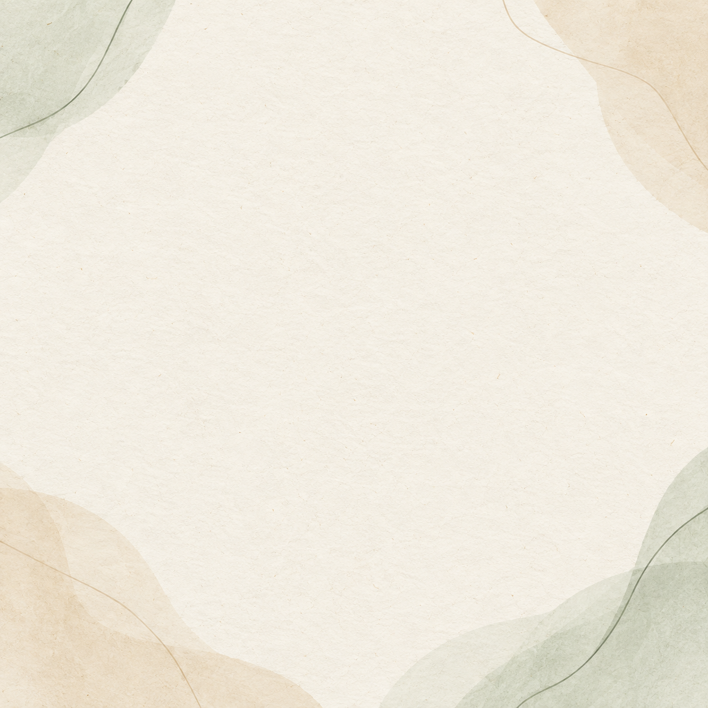

<!doctype html>
<html lang="pt-BR">
<meta charset="utf-8">
<meta name="viewport" content="width=device-width,initial-scale=1">
<title>Cards Comunidade MEV — 21/09 a 02/10</title>
<style>
  *{box-sizing:border-box} body{margin:0;background:#f6f2e9;color:#263d36;font-family:Georgia,serif}
  .card{width:1080px;height:1080px;position:relative;overflow:hidden;background:#f6f2e9}
  .texture{position:absolute;inset:0;width:100%;height:100%;object-fit:cover;opacity:.13;mix-blend-mode:multiply}
  .shape{position:absolute;border-radius:50%;opacity:.9}.a{width:350px;height:350px;left:-130px;top:-110px;background:#e6d5b4}.b{width:320px;height:320px;right:-125px;bottom:-120px;background:#dce7d9}.c{width:160px;height:160px;right:-35px;top:80px;background:#e8edd9}
  .panel{position:absolute;inset:90px;border:3px solid #c4b58d;border-radius:52px;background:rgba(255,253,249,.92);padding:52px 35px 44px;display:flex;flex-direction:column}
  .brand{font-size:29px;font-weight:bold;letter-spacing:1px;color:#687468}.rule{border-top:2px solid #c4b58d;margin:23px 0 0}.title{font-size:76px;line-height:1.08;font-weight:bold;text-align:center;margin:auto 35px 24px}.subtitle{font-size:38px;line-height:1.22;color:#677267;text-align:center;margin:0 25px auto}.meta{font-size:29px;color:#687468;letter-spacing:.5px}
  .steps .title{font-size:66px;margin-top:75px;margin-bottom:48px}.step{font-size:34px;background:#edf2ed;border-radius:20px;padding:20px 36px;margin:12px 30px;color:#33453e}.dark{background:#174a3d}.dark .panel{background:#215545;border-color:#cdbb7a}.dark .brand,.dark .meta{color:#dcc983}.dark .rule{border-color:#cdbb7a}.dark .title{color:#fffaf0}.dark .subtitle{color:#e2e8df}.dark .a{background:#1a5143}.dark .b{background:#2b624f}.dark .c{background:#245a4a}
</style>
<body><main id="root"></main><script>
const cards=[
 ['21/09','SONO','A noite começa antes.','Escolha um sinal de descanso.','light'],
 ['22/09','SONO','À noite, o ambiente também conversa com o corpo.','Diminua um pouco a luz hoje.','dark'],
 ['23/09','PRÁTICA GUIADA • SONO','Desacelerar em três passos','', 'steps'],
 ['24/09','SONO','Perceber o corpo ajuda a ajustar o passo.','Hoje, ajuste suas expectativas com gentileza.','light'],
 ['25/09','SONO','Flexibilidade também pode ter cuidado.','Um cuidado mínimo já protege a sua noite.','dark'],
 ['28/09','MANEJO DO ESTRESSE','Uma pausa pequena muda o próximo passo.','Um minuto de presença é uma escolha possível.','light'],
 ['29/09','CONEXÕES SOCIAIS','Autonomia também se fortalece com apoio.','Hoje, escolha um gesto simples de conexão.','dark'],
 ['30/09','AMBIENTE A FAVOR','Ajuste o ambiente, não só a vontade.','Deixe uma boa escolha mais fácil de encontrar.','light'],
 ['01/10','INTEGRAÇÃO DOS PILARES','O que já está funcionando?','Reconheça uma escolha possível desta semana.','light'],
 ['02/10','INTEGRAÇÃO DOS PILARES','Leve um acordo possível para outubro.','Retomar também faz parte do plano.','dark']
];
const i=Math.max(0,Math.min(cards.length-1,Number(new URLSearchParams(location.search).get('card'))||0)); const [date,pillar,title,sub,kind]=cards[i];
const steps=kind==='steps'; document.getElementById('root').innerHTML=`<section class="card ${kind==='dark'?'dark':''} ${steps?'steps':''}"><i class="shape a"></i><i class="shape b"></i><i class="shape c"></i><div class="panel"><div class="brand">COMUNIDADE MEV DRA LÍGIA TOLEDO</div><div class="rule"></div>${steps?`<div class="title">${title}</div><div class="step">1. Ajuste o ambiente</div><div class="step">2. Faça três respirações lentas</div><div class="step">3. Feche o dia com gentileza</div><div style="flex:1"></div>`:`<div class="title">${title}</div><div class="subtitle">${sub}</div>`}<div class="meta">${pillar} • ${date}</div></div></section>`;
</script></body></html>
